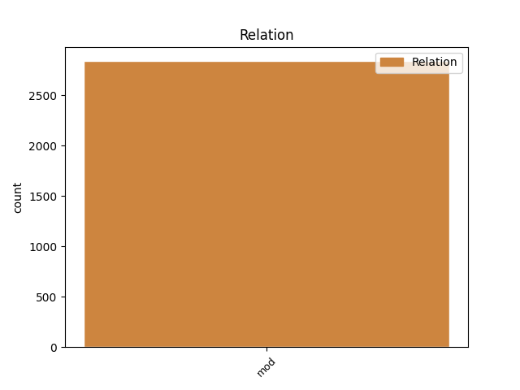
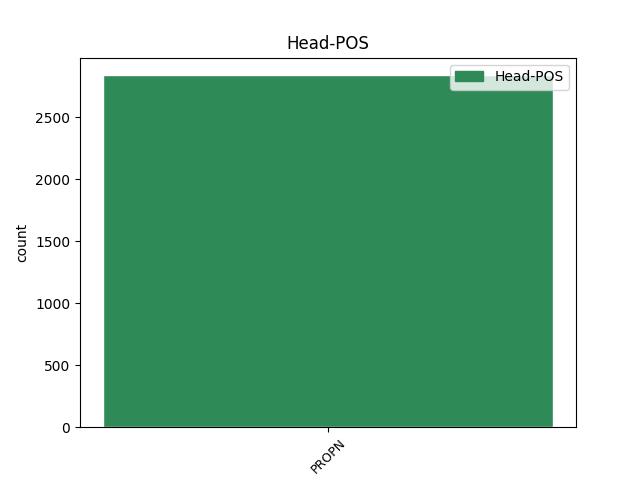
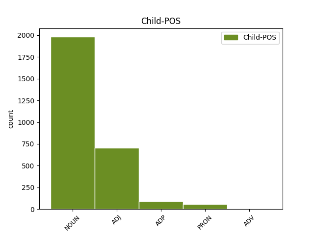

Distribution of features within this leaf



Agreement Rules sorted by frequency.
- When the dependent token is the direct object complements(comp:obj) of the head token, and the head token is ADP and the dependent token is ADP.
1 यूं _ _ _ _ 0 _ _ _
2 तो _ _ _ _ 0 _ _ _
3 दलाई _ _ _ _ 0 _ _ _
4 लामा _ _ _ _ 0 _ _ _
5 ने _ _ _ _ 0 _ _ _
6 वेन _ _ _ _ 0 _ _ _
7 जियाबाओ _ _ _ _ 0 _ _ _
8 को _ _ _ _ 0 _ _ _
9 एक _ _ _ _ 0 _ _ _
10 एकाधिकारवादी _ _ _ _ 0 _ _ _
11 देश _ _ _ _ 0 _ _ _
12 का _ _ _ _ 0 _ _ _
13 नेता _ _ _ _ 0 _ _ _
14 करार _ _ _ _ 0 _ _ _
15 दिया _ _ _ _ 0 _ _ _
16 , _ _ _ _ 0 _ _ _
17 लेकिन _ _ _ _ 0 _ _ _
18 उन्होंने _ _ _ _ 0 _ _ _
19 जियाबाओ _ _ _ _ 0 _ _ _
20 को _ _ _ _ 0 _ _ _
21 पूर्ववर्ती _ _ _ _ 0 _ _ _
22 चीनी _ _ _ _ 0 _ _ _
23 प्रधानमंत्रियों _ _ _ _ 0 _ _ _
24 की का ADP PSP AdpType=Post|Case=Acc|Gender=Fem 25 comp:obj _ ChunkId=NP8|ChunkType=child|Translit=kī
25 तुलना तुलना ADP PSP Case=Acc|Gender=Fem 0 _ _ _
26 में _ _ _ _ 0 _ _ _
27 अधिक _ _ _ _ 0 _ _ _
28 व्यावहारिक _ _ _ _ 0 _ _ _
29 , _ _ _ _ 0 _ _ _
30 उदार _ _ _ _ 0 _ _ _
31 और _ _ _ _ 0 _ _ _
32 दूरदर्शी _ _ _ _ 0 _ _ _
33 नेता _ _ _ _ 0 _ _ _
34 भी _ _ _ _ 0 _ _ _
35 करार _ _ _ _ 0 _ _ _
36 दिया _ _ _ _ 0 _ _ _
37 । _ _ _ _ 0 _ _ _
1 अगर _ _ _ _ 0 _ _ _
2 तुमने _ _ _ _ 0 _ _ _
3 उलेमा _ _ _ _ 0 _ _ _
4 से _ _ _ _ 0 _ _ _
5 माफी _ _ _ _ 0 _ _ _
6 नहीं _ _ _ _ 0 _ _ _
7 मांगी _ _ _ _ 0 _ _ _
8 तो _ _ _ _ 0 _ _ _
9 इसके _ _ _ _ 0 _ _ _
10 लिए _ _ _ _ 0 _ _ _
11 निर्दोष _ _ _ _ 0 _ _ _
12 लोगों _ _ _ _ 0 _ _ _
13 की _ _ _ _ 0 _ _ _
14 जान _ _ _ _ 0 _ _ _
15 के का ADP PSP AdpType=Post|Case=Acc|Gender=Masc|Number=Sing 16 udep _ ChunkId=NP6|ChunkType=child|Translit=ke
16 जिम्मेदार जिम्मेदार ADJ JJ Case=Acc 0 _ _ _
17 अमर _ _ _ _ 0 _ _ _
18 उजाला _ _ _ _ 0 _ _ _
19 के _ _ _ _ 0 _ _ _
20 संपादक _ _ _ _ 0 _ _ _
21 होंगे _ _ _ _ 0 _ _ _
22 । _ _ _ _ 0 _ _ _
1 पाकिस्तान _ _ _ _ 0 _ _ _
2 के _ _ _ _ 0 _ _ _
3 निर्वासित _ _ _ _ 0 _ _ _
4 पूर्व _ _ _ _ 0 _ _ _
5 प्रधानमंत्री _ _ _ _ 0 _ _ _
6 नवाज़ _ _ _ _ 0 _ _ _
7 शरीफ _ _ _ _ 0 _ _ _
8 ने _ _ _ _ 0 _ _ _
9 राष्ट्रपति _ _ _ _ 0 _ _ _
10 परवेज़ _ _ _ _ 0 _ _ _
11 मुशर्रफ _ _ _ _ 0 _ _ _
12 के _ _ _ _ 0 _ _ _
13 साथ _ _ _ _ 0 _ _ _
14 किसी कोई PRON PRP Case=Acc|Number=Sing|Person=3|PronType=Prs 0 _ _ _
15 तरह _ _ _ _ 0 _ _ _
16 की का ADP PSP AdpType=Post|Case=Acc|Gender=Fem|Number=Sing 14 comp:obj _ ChunkId=NP5|ChunkType=child|Translit=kī
17 बातचीत _ _ _ _ 0 _ _ _
18 या _ _ _ _ 0 _ _ _
19 सौदेबाजी _ _ _ _ 0 _ _ _
20 से _ _ _ _ 0 _ _ _
21 साफ _ _ _ _ 0 _ _ _
22 इन्कार _ _ _ _ 0 _ _ _
23 किया _ _ _ _ 0 _ _ _
24 है _ _ _ _ 0 _ _ _
25 । _ _ _ _ 0 _ _ _
1 गंगा _ _ _ _ 0 _ _ _
2 में _ _ _ _ 0 _ _ _
3 प्रदूषण _ _ _ _ 0 _ _ _
4 के का ADP PSP AdpType=Post|Case=Nom|Gender=Masc|Number=Plur 5 udep _ ChunkId=NP2|ChunkType=child|Translit=ke
5 वैसे वैसा PRON PRP Case=Nom|Gender=Masc|Number=Plur|Person=3|PronType=Prs 0 _ _ _
6 बहुत _ _ _ _ 0 _ _ _
7 से _ _ _ _ 0 _ _ _
8 कारण _ _ _ _ 0 _ _ _
9 हैं _ _ _ _ 0 _ _ _
10 पर _ _ _ _ 0 _ _ _
11 सबसे _ _ _ _ 0 _ _ _
12 बड़ी _ _ _ _ 0 _ _ _
13 वजह _ _ _ _ 0 _ _ _
14 इसमें _ _ _ _ 0 _ _ _
15 सीवेज _ _ _ _ 0 _ _ _
16 और _ _ _ _ 0 _ _ _
17 कारखानों _ _ _ _ 0 _ _ _
18 से _ _ _ _ 0 _ _ _
19 निकलने _ _ _ _ 0 _ _ _
20 वाले _ _ _ _ 0 _ _ _
21 अवशिष्ट _ _ _ _ 0 _ _ _
22 का _ _ _ _ 0 _ _ _
23 गिरना _ _ _ _ 0 _ _ _
24 है _ _ _ _ 0 _ _ _
25 । _ _ _ _ 0 _ _ _
1 सवाल _ _ _ _ 0 _ _ _
2 यह _ _ _ _ 0 _ _ _
3 है _ _ _ _ 0 _ _ _
4 कि _ _ _ _ 0 _ _ _
5 सेंसेक्स _ _ _ _ 0 _ _ _
6 के का ADP PSP AdpType=Post|Case=Acc|Gender=Masc|Number=Sing 13 subj _ ChunkId=NP3|ChunkType=child|Translit=ke
7 ६३२८ _ _ _ _ 0 _ _ _
8 की _ _ _ _ 0 _ _ _
9 रिकार्ड _ _ _ _ 0 _ _ _
10 ऊंचाई _ _ _ _ 0 _ _ _
11 पर _ _ _ _ 0 _ _ _
12 पहुंच _ _ _ _ 0 _ _ _
13 जाने जा AUX VAUX Case=Acc|VerbForm=Inf 0 _ _ _
14 पर _ _ _ _ 0 _ _ _
15 निवेश _ _ _ _ 0 _ _ _
16 कहां _ _ _ _ 0 _ _ _
17 जाए _ _ _ _ 0 _ _ _
18 - _ _ _ _ 0 _ _ _
19 शेयर _ _ _ _ 0 _ _ _
20 बाजार _ _ _ _ 0 _ _ _
21 में _ _ _ _ 0 _ _ _
22 , _ _ _ _ 0 _ _ _
23 म्यूचुअल _ _ _ _ 0 _ _ _
24 फंड _ _ _ _ 0 _ _ _
25 में _ _ _ _ 0 _ _ _
26 या _ _ _ _ 0 _ _ _
27 फिक्स्ड _ _ _ _ 0 _ _ _
28 डिपॉजिट _ _ _ _ 0 _ _ _
29 में _ _ _ _ 0 _ _ _
30 ? _ _ _ _ 0 _ _ _
1 वरना _ _ _ _ 0 _ _ _
2 , _ _ _ _ 0 _ _ _
3 इराक _ _ _ _ 0 _ _ _
4 के _ _ _ _ 0 _ _ _
5 बाद बाद ADP NST AdpType=Post|Case=Nom|Gender=Masc|Number=Sing|Person=3 9 udep _ AltTag=ADP-NOUN|ChunkId=NP|ChunkType=child|Translit=bāda
6 इरान _ _ _ _ 0 _ _ _
7 पर _ _ _ _ 0 _ _ _
8 हमला _ _ _ _ 0 _ _ _
9 नजदीक नजदीक ADV NST AdpType=Post|Case=Nom|Gender=Masc|Number=Sing|Person=3 0 _ _ _
10 है _ _ _ _ 0 _ _ _
11 । _ _ _ _ 0 _ _ _
1 दरअसल _ _ _ _ 0 _ _ _
2 डाक _ _ _ _ 0 _ _ _
3 विभाग _ _ _ _ 0 _ _ _
4 ने _ _ _ _ 0 _ _ _
5 महाराष्ट्र _ _ _ _ 0 _ _ _
6 के _ _ _ _ 0 _ _ _
7 तीन _ _ _ _ 0 _ _ _
8 बीमा _ _ _ _ 0 _ _ _
9 धारकों _ _ _ _ 0 _ _ _
10 को _ _ _ _ 0 _ _ _
11 यह _ _ _ _ 0 _ _ _
12 कहते _ _ _ _ 0 _ _ _
13 हुए _ _ _ _ 0 _ _ _
14 पूरी _ _ _ _ 0 _ _ _
15 रक़म _ _ _ _ 0 _ _ _
16 लौटाने _ _ _ _ 0 _ _ _
17 से _ _ _ _ 0 _ _ _
18 इनकार _ _ _ _ 0 _ _ _
19 कर _ _ _ _ 0 _ _ _
20 दिया _ _ _ _ 0 _ _ _
21 था _ _ _ _ 0 _ _ _
22 कि _ _ _ _ 0 _ _ _
23 उन _ _ _ _ 0 _ _ _
24 लोगों _ _ _ _ 0 _ _ _
25 ने _ _ _ _ 0 _ _ _
26 पूरी _ _ _ _ 0 _ _ _
27 अवधि _ _ _ _ 0 _ _ _
28 तक _ _ _ _ 0 _ _ _
29 बीमा _ _ _ _ 0 _ _ _
30 की _ _ _ _ 0 _ _ _
31 रक़म _ _ _ _ 0 _ _ _
32 जमा _ _ _ _ 0 _ _ _
33 नहीं _ _ _ _ 0 _ _ _
34 की _ _ _ _ 0 _ _ _
35 और _ _ _ _ 0 _ _ _
36 समय _ _ _ _ 0 _ _ _
37 से _ _ _ _ 0 _ _ _
38 पहले पहले ADP NST AdpType=Post|Case=Nom|Gender=Masc|Number=Sing|Person=3 44 udep _ AltTag=ADP-NOUN|ChunkId=NP11|ChunkType=child|Translit=pahale
39 ही _ _ _ _ 0 _ _ _
40 पॉलिसी _ _ _ _ 0 _ _ _
41 को _ _ _ _ 0 _ _ _
42 बंद _ _ _ _ 0 _ _ _
43 कर _ _ _ _ 0 _ _ _
44 दिया दे AUX VAUX Case=Nom|Gender=Masc|Number=Sing 0 _ _ _
45 । _ _ _ _ 0 _ _ _
1 कांग्रेस _ _ _ _ 0 _ _ _
2 नेतृत्व _ _ _ _ 0 _ _ _
3 वाली _ _ _ _ 0 _ _ _
4 राज्य _ _ _ _ 0 _ _ _
5 की _ _ _ _ 0 _ _ _
6 गठबंधन _ _ _ _ 0 _ _ _
7 सरकार _ _ _ _ 0 _ _ _
8 में _ _ _ _ 0 _ _ _
9 शामिल _ _ _ _ 0 _ _ _
10 जनता _ _ _ _ 0 _ _ _
11 दल _ _ _ _ 0 _ _ _
12 ( _ _ _ _ 0 _ _ _
13 एस _ _ _ _ 0 _ _ _
14 ) _ _ _ _ 0 _ _ _
15 के _ _ _ _ 0 _ _ _
16 प्रमुख _ _ _ _ 0 _ _ _
17 एवं _ _ _ _ 0 _ _ _
18 पूर्व _ _ _ _ 0 _ _ _
19 प्रधानमंत्री _ _ _ _ 0 _ _ _
20 एच. _ _ _ _ 0 _ _ _
21 डी. _ _ _ _ 0 _ _ _
22 देवगौड़ा _ _ _ _ 0 _ _ _
23 के _ _ _ _ 0 _ _ _
24 पुत्र _ _ _ _ 0 _ _ _
25 एच. _ _ _ _ 0 _ _ _
26 डी. _ _ _ _ 0 _ _ _
27 कुमारस्वामी _ _ _ _ 0 _ _ _
28 ने _ _ _ _ 0 _ _ _
29 पिता _ _ _ _ 0 _ _ _
30 के _ _ _ _ 0 _ _ _
31 खिलाफ _ _ _ _ 0 _ _ _
32 विद्रोह _ _ _ _ 0 _ _ _
33 करते _ _ _ _ 0 _ _ _
34 हुए _ _ _ _ 0 _ _ _
35 पार्टी _ _ _ _ 0 _ _ _
36 के का ADP PSP AdpType=Post|Case=Acc|Gender=Masc|Number=Sing 37 udep _ ChunkId=NP11|ChunkType=child|Translit=ke
37 ४० ४० NUM QC Case=Acc|NumType=Card 0 _ _ _
38 से _ _ _ _ 0 _ _ _
39 अधिक _ _ _ _ 0 _ _ _
40 विधायकों _ _ _ _ 0 _ _ _
41 के _ _ _ _ 0 _ _ _
42 साथ _ _ _ _ 0 _ _ _
43 सरकार _ _ _ _ 0 _ _ _
44 से _ _ _ _ 0 _ _ _
45 अलग _ _ _ _ 0 _ _ _
46 होने _ _ _ _ 0 _ _ _
47 का _ _ _ _ 0 _ _ _
48 ऐलान _ _ _ _ 0 _ _ _
49 कर _ _ _ _ 0 _ _ _
50 दिया _ _ _ _ 0 _ _ _
51 । _ _ _ _ 0 _ _ _
1 जीएसआई _ _ _ _ 0 _ _ _
2 के _ _ _ _ 0 _ _ _
3 अनुसार _ _ _ _ 0 _ _ _
4 १८८१ _ _ _ _ 0 _ _ _
5 के _ _ _ _ 0 _ _ _
6 पैटर्न _ _ _ _ 0 _ _ _
7 वाले _ _ _ _ 0 _ _ _
8 घटनाक्रम _ _ _ _ 0 _ _ _
9 के का ADP PSP AdpType=Post|Case=Acc|Gender=Masc|Number=Sing 16 subj@pass _ ChunkId=NP4|ChunkType=child|Translit=ke
10 ११४ _ _ _ _ 0 _ _ _
11 से _ _ _ _ 0 _ _ _
12 २०० _ _ _ _ 0 _ _ _
13 सालों _ _ _ _ 0 _ _ _
14 में _ _ _ _ 0 _ _ _
15 दोहराए _ _ _ _ 0 _ _ _
16 जाने जा AUX VAUX Case=Acc|VerbForm=Inf 0 _ _ _
17 की _ _ _ _ 0 _ _ _
18 संभावना _ _ _ _ 0 _ _ _
19 है _ _ _ _ 0 _ _ _
20 । _ _ _ _ 0 _ _ _
1 उन्होंने _ _ _ _ 0 _ _ _
2 कहा _ _ _ _ 0 _ _ _
3 कि _ _ _ _ 0 _ _ _
4 सरकार _ _ _ _ 0 _ _ _
5 को _ _ _ _ 0 _ _ _
6 अभी अभी PRON PRP Case=Nom|PronType=Prs 0 _ _ _
7 या _ _ _ _ 0 _ _ _
8 अगले _ _ _ _ 0 _ _ _
9 कुछ _ _ _ _ 0 _ _ _
10 समय _ _ _ _ 0 _ _ _
11 के _ _ _ _ 0 _ _ _
12 भीतर भीतर ADP NST AdpType=Post|Case=Nom|Gender=Masc|Number=Sing|Person=3 6 conj _ AltTag=ADP-NOUN|ChunkId=NP4|ChunkType=child|Translit=bhītara
13 छठे _ _ _ _ 0 _ _ _
14 वेतन _ _ _ _ 0 _ _ _
15 आयोग _ _ _ _ 0 _ _ _
16 का _ _ _ _ 0 _ _ _
17 गठन _ _ _ _ 0 _ _ _
18 करना _ _ _ _ 0 _ _ _
19 चाहिए _ _ _ _ 0 _ _ _
20 । _ _ _ _ 0 _ _ _
1 यह _ _ _ _ 0 _ _ _
2 साफ _ _ _ _ 0 _ _ _
3 नहीं _ _ _ _ 0 _ _ _
4 हुआ _ _ _ _ 0 _ _ _
5 है _ _ _ _ 0 _ _ _
6 कि _ _ _ _ 0 _ _ _
7 इन _ _ _ _ 0 _ _ _
8 तस्वीरों _ _ _ _ 0 _ _ _
9 को _ _ _ _ 0 _ _ _
10 खींचने _ _ _ _ 0 _ _ _
11 वाला वाला ADP PSP AdpType=Post|Case=Nom|Gender=Masc|Number=Sing 12 mod _ ChunkId=VGNN|ChunkType=child|Translit=vālā
12 कौन कौन PRON WQ Case=Nom|Number=Sing|Person=3|PronType=Int 0 _ _ _
13 है _ _ _ _ 0 _ _ _
14 । _ _ _ _ 0 _ _ _
1 वामपंथियों _ _ _ _ 0 _ _ _
2 का _ _ _ _ 0 _ _ _
3 कहना _ _ _ _ 0 _ _ _
4 है _ _ _ _ 0 _ _ _
5 कि _ _ _ _ 0 _ _ _
6 ईरान _ _ _ _ 0 _ _ _
7 हमारा _ _ _ _ 0 _ _ _
8 पारंपरिक _ _ _ _ 0 _ _ _
9 मित्र _ _ _ _ 0 _ _ _
10 देश _ _ _ _ 0 _ _ _
11 है _ _ _ _ 0 _ _ _
12 और _ _ _ _ 0 _ _ _
13 मध्य _ _ _ _ 0 _ _ _
14 पूर्व पूर्व ADJ JJ Case=Acc|Gender=Masc|Number=Sing|Person=3 0 _ _ _
15 व _ _ _ _ 0 _ _ _
16 खाड़ी _ _ _ _ 0 _ _ _
17 के का ADP PSP AdpType=Post|Case=Acc|Gender=Masc|Number=Plur 14 conj _ ChunkId=NP6|ChunkType=child|Translit=ke
18 देशों _ _ _ _ 0 _ _ _
19 में _ _ _ _ 0 _ _ _
20 किसी _ _ _ _ 0 _ _ _
21 प्रकार _ _ _ _ 0 _ _ _
22 की _ _ _ _ 0 _ _ _
23 क्षेत्रीय _ _ _ _ 0 _ _ _
24 अस्थिरता _ _ _ _ 0 _ _ _
25 का _ _ _ _ 0 _ _ _
26 हमारे _ _ _ _ 0 _ _ _
27 देश _ _ _ _ 0 _ _ _
28 पर _ _ _ _ 0 _ _ _
29 असर _ _ _ _ 0 _ _ _
30 पड़ेगा _ _ _ _ 0 _ _ _
31 । _ _ _ _ 0 _ _ _
1 इस _ _ _ _ 0 _ _ _
2 बारे _ _ _ _ 0 _ _ _
3 में _ _ _ _ 0 _ _ _
4 राज्यसभा _ _ _ _ 0 _ _ _
5 में _ _ _ _ 0 _ _ _
6 एक _ _ _ _ 0 _ _ _
7 प्रश्न _ _ _ _ 0 _ _ _
8 के _ _ _ _ 0 _ _ _
9 जवाब _ _ _ _ 0 _ _ _
10 में _ _ _ _ 0 _ _ _
11 विदेश _ _ _ _ 0 _ _ _
12 मंत्री _ _ _ _ 0 _ _ _
13 नटवर _ _ _ _ 0 _ _ _
14 सिंह _ _ _ _ 0 _ _ _
15 ने _ _ _ _ 0 _ _ _
16 कहा _ _ _ _ 0 _ _ _
17 कि _ _ _ _ 0 _ _ _
18 नेपाल _ _ _ _ 0 _ _ _
19 नरेश _ _ _ _ 0 _ _ _
20 ज्ञानेंद्र _ _ _ _ 0 _ _ _
21 द्वारा _ _ _ _ 0 _ _ _
22 प्रधानमंत्री _ _ _ _ 0 _ _ _
23 मनमोहन _ _ _ _ 0 _ _ _
24 सिंह _ _ _ _ 0 _ _ _
25 व _ _ _ _ 0 _ _ _
26 उन्हें _ _ _ _ 0 _ _ _
27 देश _ _ _ _ 0 _ _ _
28 में _ _ _ _ 0 _ _ _
29 आपातकाल _ _ _ _ 0 _ _ _
30 हटाए _ _ _ _ 0 _ _ _
31 जाने _ _ _ _ 0 _ _ _
32 , _ _ _ _ 0 _ _ _
33 राजनीतिक _ _ _ _ 0 _ _ _
34 कैदियों _ _ _ _ 0 _ _ _
35 के _ _ _ _ 0 _ _ _
36 छोड़े _ _ _ _ 0 _ _ _
37 जाने जा AUX VAUX Case=Acc|VerbForm=Inf 0 _ _ _
38 व _ _ _ _ 0 _ _ _
39 लोकतांत्रिक _ _ _ _ 0 _ _ _
40 प्रक्रिया _ _ _ _ 0 _ _ _
41 जल्द _ _ _ _ 0 _ _ _
42 शुरू _ _ _ _ 0 _ _ _
43 किए _ _ _ _ 0 _ _ _
44 जाने _ _ _ _ 0 _ _ _
45 के का ADP PSP AdpType=Post|Case=Acc|Gender=Masc|Number=Sing 37 conj _ ChunkId=VGNN3|ChunkType=child|Translit=ke
46 आश्वासन _ _ _ _ 0 _ _ _
47 देने _ _ _ _ 0 _ _ _
48 के _ _ _ _ 0 _ _ _
49 बाद _ _ _ _ 0 _ _ _
50 यह _ _ _ _ 0 _ _ _
51 कार्रवाई _ _ _ _ 0 _ _ _
52 करना _ _ _ _ 0 _ _ _
53 खेद _ _ _ _ 0 _ _ _
54 जनक _ _ _ _ 0 _ _ _
55 है _ _ _ _ 0 _ _ _
56 . _ _ _ _ 0 _ _ _
1 खान _ _ _ _ 0 _ _ _
2 आतंकी _ _ _ _ 0 _ _ _
3 हफीज़ _ _ _ _ 0 _ _ _
4 सईद _ _ _ _ 0 _ _ _
5 के का ADP PSP AdpType=Post|Case=Acc|Gender=Masc|Number=Sing 7 subj _ ChunkId=NP2|ChunkType=child|Translit=ke
6 नेतृत्व _ _ _ _ 0 _ _ _
7 वाले वाला ADP PSP AdpType=Post|Case=Acc|Gender=Masc|Number=Sing 0 _ _ _
8 लश्कर _ _ _ _ 0 _ _ _
9 के _ _ _ _ 0 _ _ _
10 जलसे _ _ _ _ 0 _ _ _
11 में _ _ _ _ 0 _ _ _
12 शामिल _ _ _ _ 0 _ _ _
13 हुए _ _ _ _ 0 _ _ _
14 । _ _ _ _ 0 _ _ _
1 निदेशक _ _ _ _ 0 _ _ _
2 मनु _ _ _ _ 0 _ _ _
3 आनंद _ _ _ _ 0 _ _ _
4 के _ _ _ _ 0 _ _ _
5 अनुसार _ _ _ _ 0 _ _ _
6 जम्मू _ _ _ _ 0 _ _ _
7 से _ _ _ _ 0 _ _ _
8 छपाई _ _ _ _ 0 _ _ _
9 शुरू _ _ _ _ 0 _ _ _
10 होने _ _ _ _ 0 _ _ _
11 के _ _ _ _ 0 _ _ _
12 बाद _ _ _ _ 0 _ _ _
13 ' _ _ _ _ 0 _ _ _
14 अमर _ _ _ _ 0 _ _ _
15 उजाला _ _ _ _ 0 _ _ _
16 ' _ _ _ _ 0 _ _ _
17 अब _ _ _ _ 0 _ _ _
18 सबसे _ _ _ _ 0 _ _ _
19 पहले _ _ _ _ 0 _ _ _
20 ख़बर _ _ _ _ 0 _ _ _
21 देने _ _ _ _ 0 _ _ _
22 के _ _ _ _ 0 _ _ _
23 साथ साथ ADV NST AdpType=Post|Case=Nom|Gender=Masc|Number=Sing|Person=3 0 _ _ _
24 ही _ _ _ _ 0 _ _ _
25 साथ साथ ADP NST AdpType=Post|Case=Nom|Gender=Masc|Number=Sing|Person=3 23 comp:obj _ AltTag=ADP-NOUN|ChunkId=VGNN2|ChunkType=child|Translit=sātha
26 सबसे _ _ _ _ 0 _ _ _
27 पहले _ _ _ _ 0 _ _ _
28 पाठकों _ _ _ _ 0 _ _ _
29 के _ _ _ _ 0 _ _ _
30 हाथ _ _ _ _ 0 _ _ _
31 तक _ _ _ _ 0 _ _ _
32 भी _ _ _ _ 0 _ _ _
33 पहुँचेगा _ _ _ _ 0 _ _ _
34 । _ _ _ _ 0 _ _ _
1 ठाणे _ _ _ _ 0 _ _ _
2 रेलवे _ _ _ _ 0 _ _ _
3 स्टेशन _ _ _ _ 0 _ _ _
4 पर _ _ _ _ 0 _ _ _
5 ज़बरदस्त _ _ _ _ 0 _ _ _
6 भीड़ _ _ _ _ 0 _ _ _
7 होने _ _ _ _ 0 _ _ _
8 के _ _ _ _ 0 _ _ _
9 कारण कारण ADP PSP Case=Acc|Gender=Masc 14 mod _ ChunkId=VGNN|ChunkType=child|Translit=kāraṇa
10 ट्रेन _ _ _ _ 0 _ _ _
11 में _ _ _ _ 0 _ _ _
12 नहीं _ _ _ _ 0 _ _ _
13 चढ़ _ _ _ _ 0 _ _ _
14 पाने पा AUX VAUX Case=Acc|VerbForm=Inf 0 _ _ _
15 वाले _ _ _ _ 0 _ _ _
16 सैकड़ों _ _ _ _ 0 _ _ _
17 यात्रियों _ _ _ _ 0 _ _ _
18 ने _ _ _ _ 0 _ _ _
19 उपनगरीय _ _ _ _ 0 _ _ _
20 रेलगाड़ियों _ _ _ _ 0 _ _ _
21 पर _ _ _ _ 0 _ _ _
22 पत्थर _ _ _ _ 0 _ _ _
23 फेंके _ _ _ _ 0 _ _ _
24 । _ _ _ _ 0 _ _ _
Disagree Examples:
1 विशाल _ _ _ _ 0 _ _ _
2 क्षेत्र _ _ _ _ 0 _ _ _
3 में _ _ _ _ 0 _ _ _
4 फैले _ _ _ _ 0 _ _ _
5 इस _ _ _ _ 0 _ _ _
6 भवन _ _ _ _ 0 _ _ _
7 के _ _ _ _ 0 _ _ _
8 आस _ _ _ _ 0 _ _ _
9 - _ _ _ _ 0 _ _ _
10 पास पास ADP NST AdpType=Post|Case=Acc|Gender=Masc|Number=Sing|Person=3 11 comp:obj _ AltTag=ADP-NOUN|ChunkId=NP2|ChunkType=child|Translit=pāsa
11 का का ADP PSP AdpType=Post|Case=Nom|Gender=Masc|Number=Sing 0 _ _ _
12 प्राकृतिक _ _ _ _ 0 _ _ _
13 सौंदर्य _ _ _ _ 0 _ _ _
14 इसे _ _ _ _ 0 _ _ _
15 और _ _ _ _ 0 _ _ _
16 भी _ _ _ _ 0 _ _ _
17 भव्य _ _ _ _ 0 _ _ _
18 बनाता _ _ _ _ 0 _ _ _
19 है _ _ _ _ 0 _ _ _
20 । _ _ _ _ 0 _ _ _
1 इसके _ _ _ _ 0 _ _ _
2 आस _ _ _ _ 0 _ _ _
3 - _ _ _ _ 0 _ _ _
4 पास पास ADP NST AdpType=Post|Case=Acc|Gender=Masc|Number=Sing|Person=3 5 comp:obj _ AltTag=ADP-NOUN|ChunkId=NP|ChunkType=child|Translit=pāsa
5 की का ADP PSP AdpType=Post|Case=Nom|Gender=Fem|Number=Plur 0 _ _ _
6 दीवारें _ _ _ _ 0 _ _ _
7 कुछ _ _ _ _ 0 _ _ _
8 झुकी _ _ _ _ 0 _ _ _
9 हुई _ _ _ _ 0 _ _ _
10 सी _ _ _ _ 0 _ _ _
11 हैं _ _ _ _ 0 _ _ _
12 जिसके _ _ _ _ 0 _ _ _
13 कारण _ _ _ _ 0 _ _ _
14 इसे _ _ _ _ 0 _ _ _
15 हिंडोला _ _ _ _ 0 _ _ _
16 महल _ _ _ _ 0 _ _ _
17 कहा _ _ _ _ 0 _ _ _
18 जाता _ _ _ _ 0 _ _ _
19 है _ _ _ _ 0 _ _ _
20 . _ _ _ _ 0 _ _ _
1 मंदिर _ _ _ _ 0 _ _ _
2 के _ _ _ _ 0 _ _ _
3 समीप समीप ADP NST AdpType=Post|Case=Nom|Gender=Masc|Number=Sing|Person=3 4 udep _ AltTag=ADP-NOUN|ChunkId=NP|ChunkType=child|Translit=samīpa
4 स्थित स्थित ADJ JJ Case=Acc 0 _ _ _
5 इस _ _ _ _ 0 _ _ _
6 महल _ _ _ _ 0 _ _ _
7 का _ _ _ _ 0 _ _ _
8 निर्माण _ _ _ _ 0 _ _ _
9 शाह _ _ _ _ 0 _ _ _
10 बदगा _ _ _ _ 0 _ _ _
11 खान _ _ _ _ 0 _ _ _
12 ने _ _ _ _ 0 _ _ _
13 अकबर _ _ _ _ 0 _ _ _
14 की _ _ _ _ 0 _ _ _
15 हिंदू _ _ _ _ 0 _ _ _
16 पत्नी _ _ _ _ 0 _ _ _
17 के _ _ _ _ 0 _ _ _
18 लिए _ _ _ _ 0 _ _ _
19 करवाया _ _ _ _ 0 _ _ _
20 था _ _ _ _ 0 _ _ _
21 । _ _ _ _ 0 _ _ _
1 आगरा _ _ _ _ 0 _ _ _
2 से _ _ _ _ 0 _ _ _
3 लगभग _ _ _ _ 0 _ _ _
4 35 _ _ _ _ 0 _ _ _
5 किलोमीटर _ _ _ _ 0 _ _ _
6 दूर दूर ADP NST AdpType=Post|Case=Nom|Gender=Masc|Number=Sing|Person=3 7 udep _ AltTag=ADP-NOUN|ChunkId=NP2|ChunkType=child|Translit=dūra
7 स्थित स्थित ADJ JJ Case=Acc 0 _ _ _
8 इस _ _ _ _ 0 _ _ _
9 स्थान _ _ _ _ 0 _ _ _
10 को _ _ _ _ 0 _ _ _
11 मुगल _ _ _ _ 0 _ _ _
12 सम्राट _ _ _ _ 0 _ _ _
13 अकबर _ _ _ _ 0 _ _ _
14 ने _ _ _ _ 0 _ _ _
15 अपनी _ _ _ _ 0 _ _ _
16 राजधानी _ _ _ _ 0 _ _ _
17 बनाया _ _ _ _ 0 _ _ _
18 था _ _ _ _ 0 _ _ _
19 , _ _ _ _ 0 _ _ _
20 अतः _ _ _ _ 0 _ _ _
21 यहाँ _ _ _ _ 0 _ _ _
22 कई _ _ _ _ 0 _ _ _
23 बड़ी _ _ _ _ 0 _ _ _
24 - _ _ _ _ 0 _ _ _
25 बड़ी _ _ _ _ 0 _ _ _
26 इमारतें _ _ _ _ 0 _ _ _
27 बनी _ _ _ _ 0 _ _ _
28 हुई _ _ _ _ 0 _ _ _
29 हैं _ _ _ _ 0 _ _ _
30 . _ _ _ _ 0 _ _ _
1 इस _ _ _ _ 0 _ _ _
2 झरने _ _ _ _ 0 _ _ _
3 का _ _ _ _ 0 _ _ _
4 संबंध _ _ _ _ 0 _ _ _
5 पहाड़ _ _ _ _ 0 _ _ _
6 के _ _ _ _ 0 _ _ _
7 ऊपर ऊपर ADP NST AdpType=Post|Case=Nom|Gender=Masc|Number=Sing|Person=3 8 udep _ AltTag=ADP-NOUN|ChunkId=NP3|ChunkType=child|Translit=ūpara
8 स्थित स्थित ADJ JJ Case=Acc 0 _ _ _
9 एक _ _ _ _ 0 _ _ _
10 जलकुंड _ _ _ _ 0 _ _ _
11 से _ _ _ _ 0 _ _ _
12 है _ _ _ _ 0 _ _ _
13 । _ _ _ _ 0 _ _ _